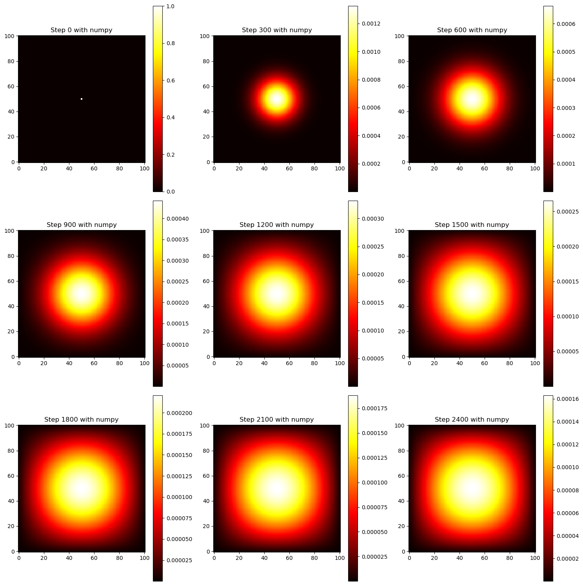

import numpy as np
from matplotlib import pyplot as plt
# Define the grid size and epsilon
N = 101
epsilon = 0.2
# Define the initial condition: 1 unit of heat at midpoint.
u0 = np.zeros((N, N))
u0[int(N/2), int(N/2)] = 1.0
# Define the function to generate matrix A
def get_A(N):
n = N * N
diagonals = [-4 * np.ones(n), np.ones(n-1), np.ones(n-1), np.ones(n-N), np.ones(n-N)]
diagonals[1][(N-1)::N] = 0 # Correct the off-diagonal elements
diagonals[2][N-1::N] = 0 # Correct the off-diagonal elements
A = np.diag(diagonals[0]) + np.diag(diagonals[1], 1) + np.diag(diagonals[2], -1) + np.diag(diagonals[3], N) + np.diag(diagonals[4], -N)
return A
# Define the function to advance the time using matrix-vector multiplication
def advance_time_matvecmul(A, u, epsilon):
N = u.shape[0]
u_next = u.flatten() + epsilon * (A @ u.flatten())
return u_next.reshape((N, N))
# Generate matrix A
A = get_A(N)
# Run the simulation for 2700 iterations and visualize every 300 iterations
iterations = 2700
visualization_steps = 300
# Initialize storage for visualization
u_storage = [u0]
# Start the simulation
u = u0
for step in range(1, iterations + 1):
u = advance_time_matvecmul(A, u, epsilon)
if step % visualization_steps == 0:
u_storage.append(u)
# Visualization
fig, axs = plt.subplots(3, 3, figsize=(15, 15))
for i, ax in enumerate(axs.flat):
if i < len(u_storage):
c = ax.imshow(u_storage[i], cmap='hot', origin='lower')
ax.set_title(f'Step {i * visualization_steps}')
fig.colorbar(c, ax=ax)
plt.tight_layout()
plt.show()import jax.numpy as jnp
from jax.experimental import sparse
from jax import jit
# Define the function to generate the sparse matrix A using JAX
import jax.numpy as jnp
from jax.experimental import sparse
def get_sparse_A(N):
n = N * N
rows = []
cols = []
data = []
for i in range(N):
for j in range(N):
idx = i * N + j
# Main diagonal
rows.append(idx)
cols.append(idx)
data.append(-4)
# Right neighbor
if j < N - 1:
rows.append(idx)
cols.append(idx + 1)
data.append(1)
# Left neighbor
if j > 0:
rows.append(idx)
cols.append(idx - 1)
data.append(1)
# Bottom neighbor
if i < N - 1:
rows.append(idx)
cols.append(idx + N)
data.append(1)
# Top neighbor
if i > 0:
rows.append(idx)
cols.append(idx - N)
data.append(1)
# Convert lists to JAX arrays
rows = jnp.array(rows)
cols = jnp.array(cols)
data = jnp.array(data)
# Create sparse BCOO matrix
A_sparse = sparse.BCOO((data, jnp.vstack((rows, cols)).T), shape=(n, n))
return A_sparse
# Redefine the advance_time function to work with sparse matrices
def advance_time_sparse(A, u, epsilon):
N = u.shape[0]
u_next = u.flatten() + epsilon * A @ u.flatten()
return u_next.reshape((N, N))
# JIT compile the advance time function for performance
advance_time_sparse_jit = jit(advance_time_sparse)
# Generate sparse matrix A
N = 101
A_sparse = get_sparse_A(N)
# Run the simulation for 2700 iterations and visualize every 300 iterations using the sparse matrix
iterations = 2700
visualization_steps = 300
u = u0
u_storage_sparse = [u0]
# Timing the execution
import time
start_time = time.time()
# Perform the simulation
for step in range(1, iterations + 1):
u = advance_time_sparse_jit(A_sparse, u, epsilon)
if step % visualization_steps == 0:
u_storage_sparse.append(u)
# Calculate and print the time elapsed
time_elapsed = time.time() - start_time
print(f"Time elapsed for 2700 iterations with sparse matrix: {time_elapsed:.2f} seconds")
# Visualization for sparse matrix approach
fig, axs = plt.subplots(3, 3, figsize=(15, 15))
for i, ax in enumerate(axs.flat):
if i < len(u_storage_sparse):
c = ax.imshow(u_storage_sparse[i], cmap='hot', origin='lower')
ax.set_title(f'Step {i * visualization_steps}')
fig.colorbar(c, ax=ax)
plt.tight_layout()
plt.show()Time elapsed for 2700 iterations with sparse matrix: 17.09 secondsimport time
import numpy as np
from matplotlib import pyplot as plt
# Define the advance_time_numpy function
def advance_time_numpy(u, epsilon):
"""Advances the solution by one timestep using direct numpy operations.
Args:
u: N x N grid state at timestep k.
epsilon: Stability constant.
Returns:
N x N Grid state at timestep k+1.
"""
N = u.shape[0]
# Pad the array with zeros to simulate the boundary condition
u_padded = np.pad(u, 1, mode='constant', constant_values=0)
# Calculate the update using np.roll for efficient vectorized operation
u_next = u_padded + epsilon * (np.roll(u_padded, 1, axis=0) +
np.roll(u_padded, -1, axis=0) +
np.roll(u_padded, 1, axis=1) +
np.roll(u_padded, -1, axis=1) -
4 * u_padded)
# Return the inner N x N grid, excluding the padded boundary
return u_next[1:-1, 1:-1]
# Initialize parameters and grid
N = 101
epsilon = 0.2
u0 = np.zeros((N, N))
u0[int(N/2), int(N/2)] = 1.0
# Initialize the simulation
u_numpy = u0.copy()
u_storage_numpy = [u_numpy]
# Timing the execution with numpy approach
start_time_numpy = time.time()
# Perform the simulation for 2700 iterations
iterations = 2700
visualization_steps = 300
for step in range(1, iterations + 1):
u_numpy = advance_time_numpy(u_numpy, epsilon)
if step % visualization_steps == 0:
u_storage_numpy.append(u_numpy)
# Calculate and print the time elapsed for numpy approach
time_elapsed_numpy = time.time() - start_time_numpy
print(f"Time elapsed for 2700 iterations with numpy: {time_elapsed_numpy:.2f} seconds")
# Visualization for numpy approach
fig, axs = plt.subplots(3, 3, figsize=(15, 15))
for i, ax in enumerate(axs.flat):
if i < len(u_storage_numpy):
c = ax.imshow(u_storage_numpy[i], cmap='hot', origin='lower')
ax.set_title(f'Step {i * visualization_steps} with numpy')
fig.colorbar(c, ax=ax)
plt.tight_layout()
plt.show()Time elapsed for 2700 iterations with numpy: 0.27 seconds
import jax
import jax.numpy as jnp
from jax import jit
# Define the function similar to advance_time_numpy but adapted for JAX
def advance_time_jax(u, epsilon):
u_padded = jnp.pad(u, 1, mode='constant', constant_values=0)
u_next = u_padded + epsilon * (
jnp.roll(u_padded, 1, axis=0) +
jnp.roll(u_padded, -1, axis=0) +
jnp.roll(u_padded, 1, axis=1) +
jnp.roll(u_padded, -1, axis=1) -
4 * u_padded
)
# Return the inner N x N grid, excluding the padded boundary
return u_next[1:-1, 1:-1]
# JIT compile the function for performance
advance_time_jax_jit = jit(advance_time_jax)
# Assuming u0 is already defined as an initial condition
u_jax = jnp.array(u0) # Ensure the initial condition is a JAX array
# Run a small number of iterations to compile the function
for _ in range(10):
u_jax = advance_time_jax_jit(u_jax, epsilon)
# Now, run the full simulation for 2700 iterations
import time
start_time = time.time()
u_storage_jax = [u_jax]
iterations = 2700
visualization_steps = 300
for step in range(1, iterations + 1):
u_jax = advance_time_jax_jit(u_jax, epsilon)
if step % visualization_steps == 0:
u_storage_jax.append(u_jax)
# Measure and print the elapsed time excluding the initial compilation
elapsed_time = time.time() - start_time
print(f"Time elapsed (excluding initial JIT compilation): {elapsed_time:.2f} seconds")
# Visualization code remains the same as before, using u_storage_jax for plottingTime elapsed (excluding initial JIT compilation): 0.05 seconds